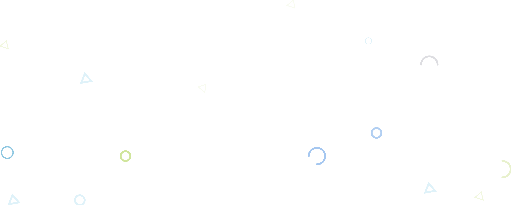
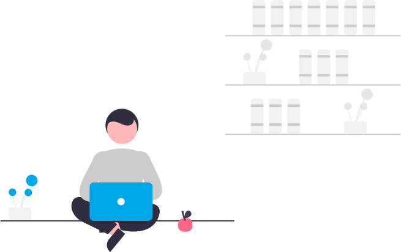

<div class="login">
  
  <div class="login__container">
    <div class="login__container__vector" *ngIf="isImage">
      
    </div>
    <div class="login__container__form">
      <form>
        
        <span class="title">Login</span>
        <div class="input">
          <div
            [ngClass]="{
              input__content: true,
              focus: input.focus ? true : false
            }"
            *ngFor="let input of inputs"
            id="{{ input.id }}"
          >
            <div class="icon">
              <fa-icon [icon]="input.icon"></fa-icon>
            </div>
            <div class="text">
              <span>{{ input.text }}</span>
              <input
                type="{{ input.type }}"
                class="text__field"
                (focus)="onFocus(input.id)"
                (keyup)="onKey($event, input.id)"
                (blur)="onBlur(input.id)"
              />
            </div>
          </div>
          <div class="input__checkbox">
            <label class="container"
              >Mantener mi sesion iniciada
              <input class="container__input" type="checkbox" />
              <span class="checkmark"></span>
            </label>
          </div>
          <button type="submit" class="input__button">
            <a class="input__button__link">Login</a>
          </button>
        </div>
      </form>
    </div>
    
  </div>
</div>
